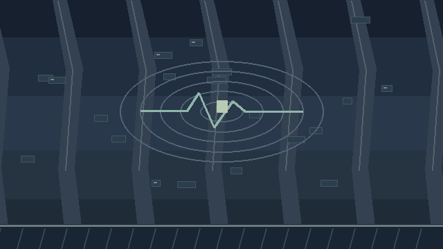

CITY DEFENSE COMMAND / 2089
ドット防衛戦線PIXEL DEFENSE FRONT
PRESS ENTER / TAP START
CAMPAIGN COMMAND
キャンペーン司令部
正式出撃以降を集計。実働時間は前景のゲーム更新秒（ヒットストップ含む）。途中終了は敗北にしません。
使用は発射・設置1操作。命中は実ダメージ適用回数（多段・直撃＋爆風を別計上）。撃破寄与は未対応。
EQUIPMENT / FOUR CLASSES
兵科・装備選択 武器を2つ選択
CONTROLS
操作方法
移動A / D・← / →
ジャンプW / ↑ / SPACE
照準・射撃マウス
武器切替Q / E / SHIFT
ポーズESC / P
スマホ：横向き推奨左：移動・JUMP／右：SW・FIRE
FIREを押して射撃、ドラッグで照準。縦向きも操作可能
FIREを押して射撃、ドラッグで照準。縦向きも操作可能
SCOUT：C / DASHで短距離ダッシュ（無敵なし）
WING：W / ↑ / FLY長押しで上昇、離すと緩やかに下降
Space / HOLDでホバー、S / ↓で下降。着地で飛行EN回復
SYSTEM HALTED
PAUSE
設定
通常ゲームの設定 · 自動保存DEFENSE FAILED
GAME OVER
MISSION COMPLETE
ミッション完了

母艦の指揮系統が停止した。しかし、さらに奥から未知の信号を検出
SIGNAL SOURCE UNKNOWNM08 — FINAL DEFENSE / 報酬は保存済みRETURN TO TITLE
タイトルへ戻りますか？
TEST LAB NO SAVE
表示中は戦闘停止 · 設定は通常セーブに保存しませんクイック設定（選ぶだけでは変更しません）
武器選択
MOVE
ACTION
FIREDRAG TO AIM